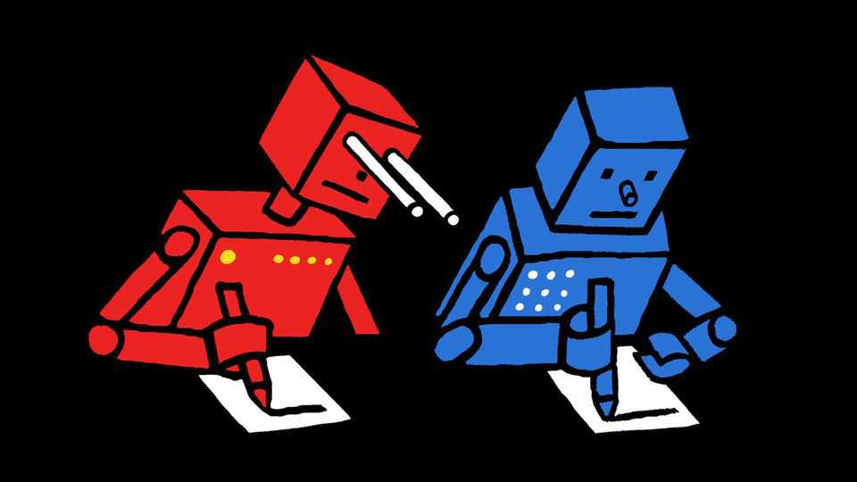

Let China copy American AI
Distillation annoys Anthropic and OpenAI. That is not reason enough to ban it

Oct 29th 2026
Anthropic and OpenAI have lately taken up an old tradition in corporate America: bemoaning the Chinese copycat. For decades firms moved assembly lines to China only to find me-too merchants rising next door. Now America’s leading artificial-intelligence labs say the same thing is happening to their models, and want the federal government to stop it.
In the race to superintelligence China remains hot on America’s heels. Experts say that Chinese AI labs produce models three to six months behind the American frontier. They do so, despite having fewer chips and less cash, largely because of distillation: a process by which inferior models learn to imitate the output of cleverer ones. Yet American legislators should resist calls to ban this type of copycat innovation. Distillation benefits consumers, reduces the chance of catastrophe—and, counterintuitively, locks in America’s technological lead.
Anthropic and OpenAI forbid the technique in their terms of service. Both have griped to the American government that Chinese rivals are stealing their intellectual property; Anthropic wants penalties. One solution, proposed in a bill before the Senate, would be to put sanctions on distillers, stopping them from offering models in America and maybe elsewhere.
Yet the labs’ commercial interests do not align with those of consumers. Users win when there are more—and more capable—models on offer. Widespread innovation forces labs to compete on price and performance, both of which will hasten adoption and potentially vast productivity gains. Distilled Chinese models, most freely downloadable on the internet, will force American labs to compete in poor countries, too.
Continued Chinese distillation is also in America’s interest. Policymakers in Washington should recognise what Chinese AI bosses already do: the technique makes China’s progress dependent on America. This leaves China ill prepared for an AI “take-off”, in which models become self-improving—and may even condemn it to a permanent second place. Copying does not guarantee overtaking, as the Soviet Union discovered when it made chips using stolen American blueprints.
Cutting off distillation would set China back months, but no more. Better to keep that option for a crisis. China’s reliance would allow America to slow both its own and its rival’s progress with guardrails against rogue AI. Indeed, safeguards to restrain American models on risky subjects, such as bioweapons, already make Chinese models safer.
What of the principle? Inventors should profit from their labour; investors, from astutely allocated capital. That means protecting companies from intellectual theft. Yet Anthropic and OpenAI are hardly suffering as a consequence of distillation. The two firms have raised hundreds of billions of dollars and dominate the market, making it hard to argue that copying hurts investment at the frontier.
AI is an odd industry. Labs may restrict efforts to distil their models, as is their right, but it is hypocritical to ask for special measures. Their empires are built on the work of others, scraped from the internet. If distillation were outlawed, Anthropic and OpenAI would be the only firms with protection against their data being used to train models.
Allowing distillation does not mean overturning intellectual-property law. Machine-written output lacks a human author, so cannot be copyrighted. The labs defend their own practices by saying that training data, sucked from the web, is “fair use”, in part because a model’s input data are different from what it produces. The same can be said for distilled models.
China’s copycats have rattled American labs and investors. Their concern is understandable. But distillation’s true beneficiary is not China. It is consumers, who gain cheaper models, and America, which cements a technological lead. ■